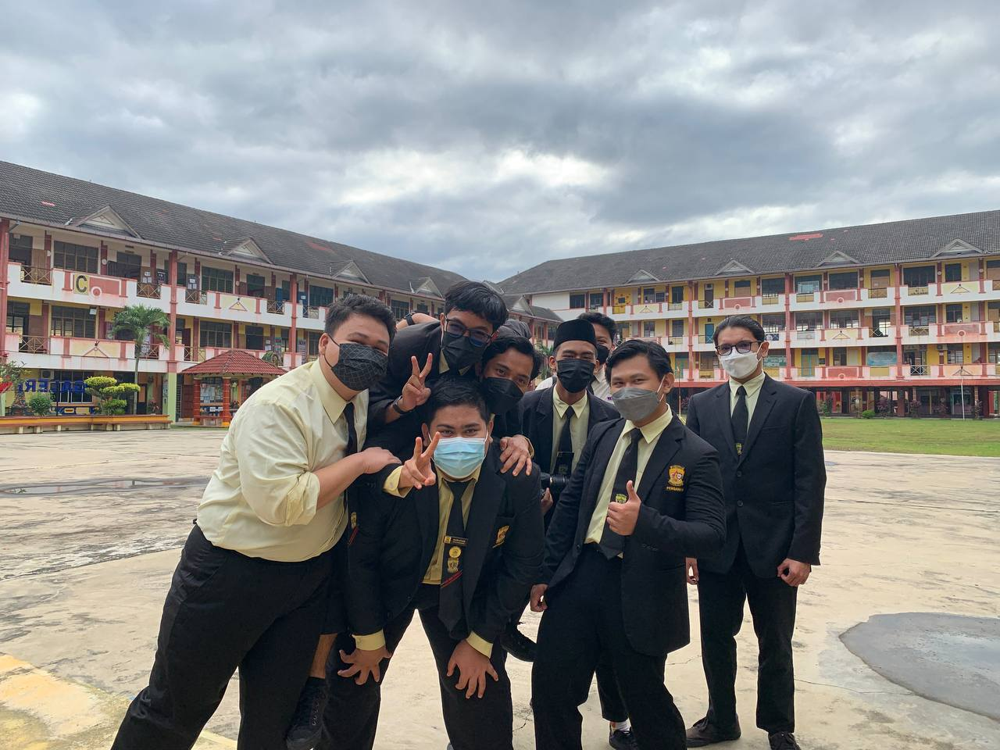

Muhd Zulfadli began his education at Sekolah Kebangsaan Desa Jasmin in Nilai, where he was an enthusiastic and high-achieving student, serving as a school prefect from Year 3 through Year 6. This experience helped me develop leadership skills and a strong sense of responsibility.
He then continued my studies at Sekolah Menengah Kebangsaan Desa Cempaka, where he became actively involved in a range of activities. He joined the English Club and participated in public speaking events like pidato and debate, and also served as a school prefect, further building his confidence and teamwork abilities.